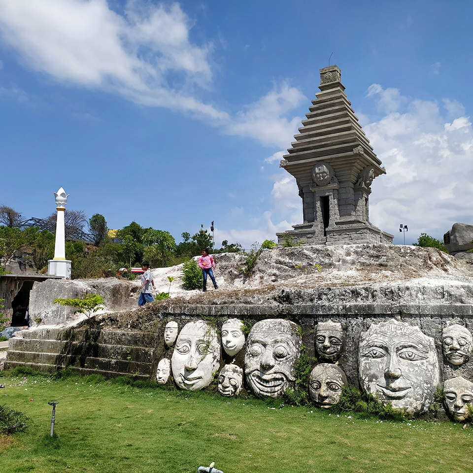

Wisata Religi
Kompleks Makam Sunan Giri
terletak di Jl Sunan Giri,
Dusun Giri Gajah,
Desa Giri,Kecamatan Kebomas, Kabupaten Gresik.

Wisata Alam
Lokasi wisata setigi tepatnya terletak
di kampng slolok,
Desa Sekapuk, Kecamatan Ujungpangkah,
Kabupaten Gresik, Jawa Timur.

Wisata Pantai
Lokasi Pantai Delegan berada di Rejodadi
Campurejo
Kabupaten Jawa Timur dan
sangat dekat dengan Lamongan.